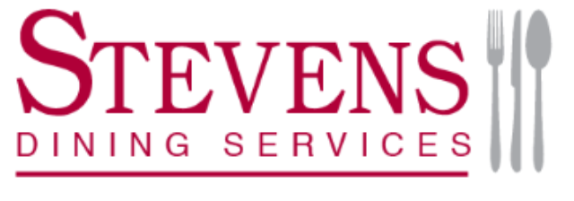
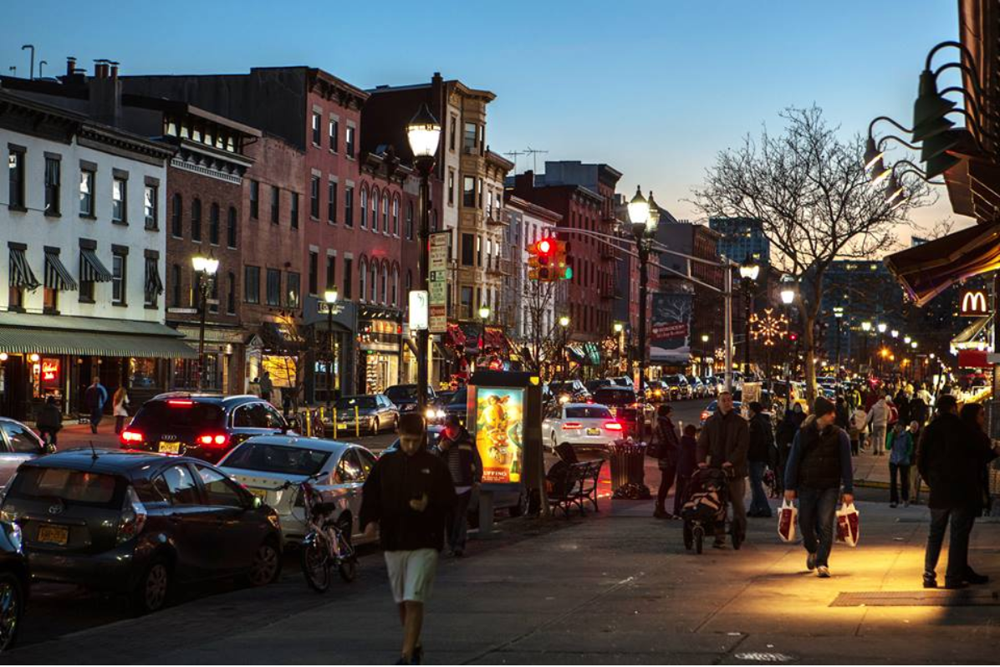

Washington Street Wednesday
Home
Pierce
America's Cup
Red & Gray Cafe
Colonel Johns
Washington Street
Washington Street Wednesday allows Stevens students to exhange a meal plan or "meal swipe" for food. The associated restauranted include: Makai Poke, Benny's Pizza, FlatBread Grill, and Stacks Pancake House.
